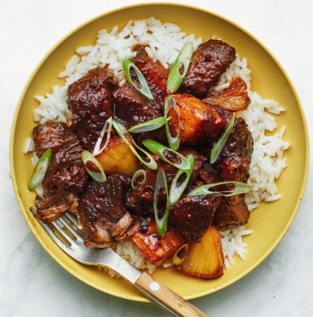

Pork Adobo

Pork adobo is a classic Filipino dish that is easy to prepare and full of flavor.
It's a savory and tangy stew made with pork, soy sauce, vinegar, garlic, and other spices.The dish typically involves marinating the pork in a mixture of soy sauce and vinegar for a few hours, then simmering it in the same marinade with garlic, bay leaves, and black peppercorns. This slow-cooking process allows the flavors to meld together and infuse the pork with a delicious tangy and salty taste.
Ingredients:
- 1 lb pork shoulder, cut into 1-2 inch cubes
- 1/2 cup soy sauce
- 1/2 cup vinegar
- 1 cup water
- 1 head garlic, peeled and crushed
- 1 tsp whole black peppercorns
- 2-3 bay leaves
- 2 tbsp cooking oil
Instructions:
- In a pot or Dutch oven, heat the cooking oil over medium-high heat. Once hot, add the garlic and sauté until fragrant.
- Add the pork and cook until lightly browned.
- Add the soy sauce, vinegar, water, black peppercorns, and bay leaves. Stir to combine.
- Bring the mixture to a boil, then lower the heat and simmer for about 45 minutes to an hour or until the pork is tender and fully cooked. You can also use a pressure cooker to speed up the cooking process.
- Once the pork is cooked, remove it from the pot and set it aside.
- Increase the heat to medium-high and continue cooking the sauce until it reduces and thickens, about 10-15 minutes.
- Return the pork to the pot and toss it with the thickened sauce.
- Serve hot with steamed rice.
Back to main